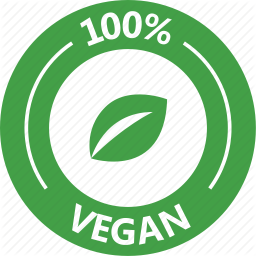
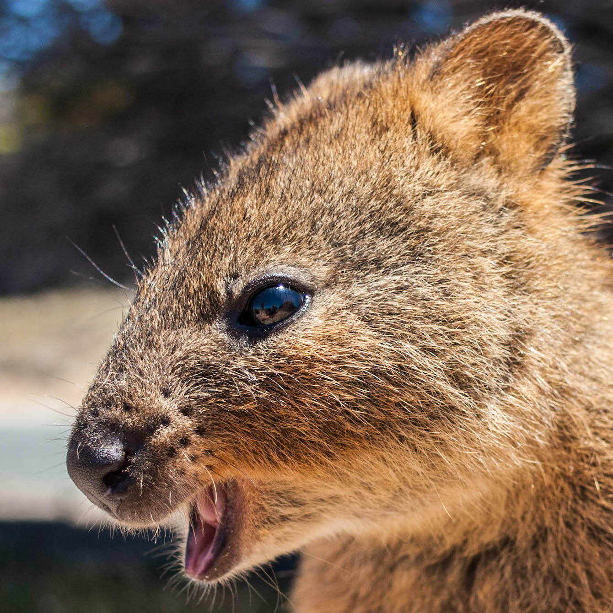

Das Quokka ist eine Beuteltierart der Familie der Kängurus
Die Merkmale eines Quokkas
| Synonyme | Art | Familie |
|---|---|---|
| Kurzschwanzkänguru | Säugetier | Kängurus |
| Setonix brachyurus | Beuteltierart |
Die Herkunft und Abstammung der Quokkas
Diese Kängurus leben in Australien, ihr Verbreitungsgebiet umfasst den Südwesten von Western Australia sowie einige vorgelagerte Inseln wie Bald Island und Rottnest Island. Diese Insel hat 1696 sogar ihren Namen („Rattennest“) wegen dieser Tiere erhalten, da die Quokkas anfänglich für große Ratten gehalten wurden. Quokkas bewohnen verschiedene Lebensräume, benötigen jedoch dicht mit Unterholz bestandene Gebiete. Auf dem Festland kommen sie häufig in der Nähe von Sümpfen und anderen Gewässern vor.
Kochideen für Widerlinge
Wir leben im dritten Jahrzehnt des 21. Jahrhunderts, wer ist da denn noch kein Veganer? Peinlich D: #govegan
Unter Artenschutz stehende Tiere zu essen ist einfach widerwertig. Außerdem bin ich kein Kochbuch!